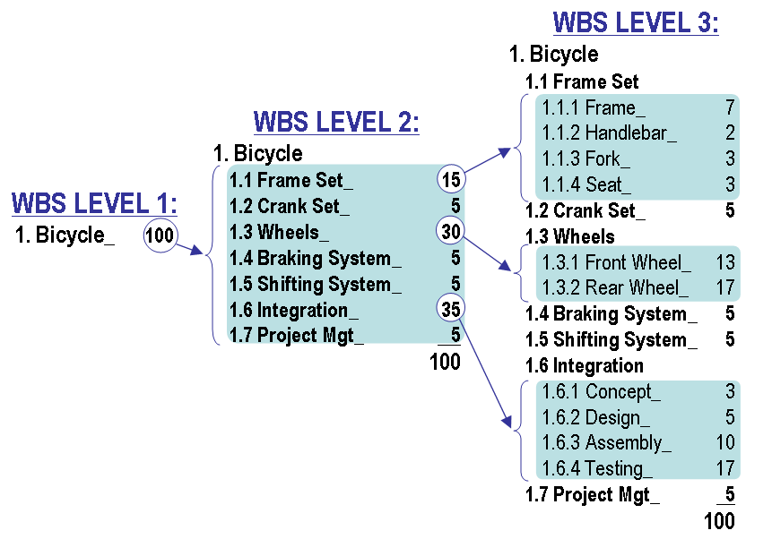

Work Breakdown Structure
A work breakdown structure (WBS), in project management and systems engineering, is a deliverable-oriented decomposition of a project into smaller components. A work breakdown structure is a key project deliverable that organizes the team's work into manageable sections. The Project Management Body of Knowledge (PMBOK 5) defines the work breakdown structure as a "A hierarchical decomposition of the total scope of work to be carried out by the project team to accomplish the project objectives and create the required deliverables."
A work breakdown structure element may be a product, data, service, or any combination thereof. A WBS also provides the necessary framework for detailed cost estimating and control along with providing guidance for schedule development and control.
Overview
WBS is a hierarchical and incremental decomposition of the project into phases, deliverables and work packages. It is a tree structure, which shows a subdivision of effort required to achieve an objective; for example a program, project, and contract. In a project or contract, the WBS is developed by starting with the end objective and successively subdividing it into manageable components in terms of size, duration, and responsibility (e.g., systems, subsystems, components, tasks, subtasks, and work packages) which include all steps necessary to achieve the objective.
The work breakdown structure provides a common framework for the natural development of the overall planning and control of a contract and is the basis for dividing work into definable increments from which the statement of work can be developed and technical, schedule, cost, and labor hour reporting can be established.
A work breakdown structure permits summing of subordinate costs for tasks, materials, etc., into their successively higher level "parent" tasks, materials, etc. For each element of the work breakdown structure, a description of the task to be performed is generated. This technique (sometimes called a system breakdown structure ) is used to define and organize the total scope of a project.
The WBS is organized around the primary products of the project (or planned outcomes) instead of the work needed to produce the products (planned actions). Since the planned outcomes are the desired ends of the project, they form a relatively stable set of categories in which the costs of the planned actions needed to achieve them can be collected. A well-designed WBS makes it easy to assign each project activity to one and only one terminal element of the WBS. In addition to its function in cost accounting, the WBS also helps map requirements from one level of system specification to another, for example a requirements cross reference matrix mapping functional requirements to high level or low level design documents.
The development of the WBS normally occurs at the start of a project and precedes detailed project and task planning.
External links
- BaiDu
- Systems Engineering
- Software Engineering
- Computer Science
- Software Project Management Tools
- Teamwork